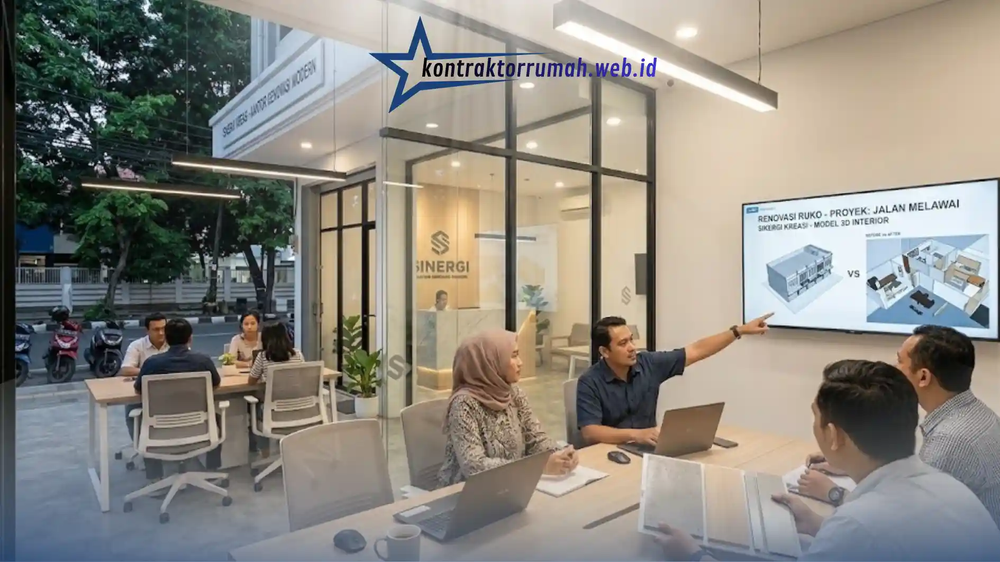

Jasa renovasi ruko menjadi kantor minimalis modern mencakup perencanaan tata ruang, perombakan struktur ringan, hingga penataan interior agar fungsional untuk kegiatan operasional bisnis. Prosesnya membutuhkan perencanaan matang agar hasil akhir efisien dari sisi ruang maupun biaya.
Poin Penting
- Renovasi ruko menjadi kantor umumnya melibatkan perubahan tata ruang, penambahan partisi, dan penyesuaian instalasi listrik.
- Konsep minimalis modern menekankan efisiensi ruang, pencahayaan alami, dan penggunaan material yang bersih secara visual.
- Tahapan renovasi mencakup survei lokasi, perencanaan desain, pengerjaan struktur, dan finishing interior.
- Estimasi biaya bervariasi tergantung luas bangunan, tingkat perubahan struktur, dan kualitas material yang dipilih.
- Legalitas renovasi seperti izin perubahan fungsi bangunan perlu diperhatikan sejak awal proyek.
Mengapa Ruko Banyak Direnovasi Menjadi Kantor Minimalis?
Ruko banyak direnovasi menjadi kantor karena struktur bangunannya fleksibel untuk diubah menjadi ruang kerja tanpa memerlukan pembangunan dari nol. Konsep minimalis modern dipilih karena efisien dari sisi ruang dan biaya perawatan jangka panjang.
Ruko pada umumnya memiliki denah terbuka dengan beberapa lantai, sehingga mudah disesuaikan menjadi area kerja, ruang meeting, hingga pantry karyawan. Karakter bangunan ini membuat proses renovasi menjadi kantor lebih efisien dibandingkan mengubah fungsi bangunan lain yang lebih kaku strukturnya.
Gaya minimalis modern juga semakin diminati karena kesan profesional yang ditampilkan tanpa memerlukan ornamen berlebihan. Pendekatan ini turut menekan biaya finishing karena material yang digunakan cenderung lebih sederhana namun tetap terlihat rapi.
Apa Saja Tahapan Renovasi Ruko Menjadi Kantor?
Tahapan renovasi ruko menjadi kantor umumnya dimulai dari survei lokasi, dilanjutkan perencanaan desain, pengerjaan struktur, dan diakhiri dengan finishing interior. Setiap tahap saling berkaitan dan memengaruhi kualitas hasil akhir.
Survei lokasi dilakukan untuk memetakan kondisi bangunan eksisting, termasuk kekuatan struktur, kondisi instalasi listrik, dan sistem drainase. Tahap ini penting untuk menentukan bagian mana yang perlu diperkuat sebelum perubahan tata ruang dilakukan.
Setelah survei, tim desain menyusun denah baru yang menyesuaikan kebutuhan operasional kantor, seperti area kerja terbuka, ruang rapat tertutup, hingga area resepsionis. Rencana ini kemudian dituangkan dalam gambar kerja dan rencana anggaran biaya sebelum eksekusi di lapangan dimulai.
Tahap pengerjaan struktur mencakup pembongkaran partisi lama, penambahan dinding baru, hingga penyesuaian instalasi listrik dan jaringan data untuk kebutuhan kantor modern. Tahap terakhir adalah finishing interior, meliputi pengecatan, pemasangan plafon, pencahayaan, dan penempatan furnitur.
Bagaimana Konsep Desain Kantor Minimalis Modern yang Ideal?
Konsep desain kantor minimalis modern menekankan efisiensi ruang, palet warna netral, dan pencahayaan alami yang maksimal. Furnitur dipilih fungsional tanpa detail dekoratif berlebihan agar ruang terasa lebih lapang.
Elemen kunci dalam desain ini meliputi penggunaan partisi kaca untuk memisahkan ruang tanpa menghalangi cahaya, penempatan jendela besar untuk pencahayaan alami, serta pemilihan warna dinding netral seperti putih, abu-abu, atau earth tone. Pendekatan ini membuat ruang kantor terasa lebih terang dan nyaman digunakan dalam waktu lama.

Partisi kaca dan pencahayaan alami menjadi ciri khas ruang rapat kantor minimalis modern hasil renovasi ruko.
Selain aspek visual, tata ruang juga perlu memperhatikan alur kerja karyawan, seperti penempatan area kerja dekat dengan sumber pencahayaan alami dan jarak yang efisien antara ruang kerja dengan ruang rapat.
Berapa Estimasi Biaya Renovasi Ruko Menjadi Kantor?
Estimasi biaya renovasi ruko menjadi kantor bervariasi tergantung luas bangunan, tingkat perubahan struktur, dan kualitas material yang dipilih. Renovasi ringan tanpa perubahan struktur besar umumnya membutuhkan biaya lebih rendah dibandingkan renovasi total.
Komponen biaya biasanya mencakup pembongkaran, material bangunan, upah tenaga kerja, hingga instalasi listrik dan jaringan data. Pemilik proyek disarankan meminta rincian rencana anggaran biaya secara tertulis dari kontraktor sebelum pekerjaan dimulai, agar tidak ada biaya tersembunyi yang muncul di tengah proses renovasi.
Faktor lain yang memengaruhi biaya adalah pemilihan material finishing, seperti jenis lantai, cat, dan sistem pencahayaan. Material dengan kualitas lebih tinggi umumnya menambah biaya awal, namun dapat mengurangi biaya perawatan dalam jangka panjang.
Apa Saja Izin yang Perlu Diperhatikan Sebelum Renovasi?
Perubahan fungsi ruko menjadi kantor umumnya memerlukan penyesuaian izin bangunan, terutama jika perubahan fungsi tersebut berbeda dari peruntukan awal bangunan. Pemilik properti disarankan mengonfirmasi status izin ke instansi terkait sebelum renovasi dimulai.
Beberapa daerah mewajibkan penyesuaian dokumen perizinan saat terjadi perubahan fungsi bangunan, terutama untuk bangunan yang akan digunakan sebagai tempat usaha dengan aktivitas operasional rutin. Mengabaikan aspek ini dapat menimbulkan masalah administratif di kemudian hari, termasuk saat proses perizinan usaha di lokasi tersebut.
Renovasi ruko menjadi kantor minimalis modern membutuhkan perencanaan matang mulai dari survei lokasi, desain tata ruang, hingga estimasi biaya yang transparan. Konsep minimalis dipilih karena efisien dari sisi ruang, biaya, dan perawatan jangka panjang.
Sebelum memulai renovasi, pastikan legalitas perubahan fungsi bangunan sudah diperjelas dan rencana anggaran biaya disusun secara rinci bersama kontraktor terpercaya, agar proses renovasi berjalan lancar tanpa kendala administratif maupun finansial.
Konsultasikan Renovasi Ruko Bersama Kami
Tim Kontraktor Rumah berpengalaman menangani renovasi ruko menjadi kantor minimalis modern, mulai dari survei lokasi, penyesuaian struktur, hingga finishing interior sesuai kebutuhan operasional bisnis Anda.
Jika Anda sedang mempertimbangkan renovasi ruko menjadi kantor, tim kami siap membantu penyusunan RAB transparan dan pendampingan aspek legalitas perubahan fungsi bangunan sejak tahap perencanaan.
FAQ Seputar Renovasi Ruko Menjadi Kantor
Renovasi ruko menjadi kantor yang berhasil selalu bertumpu pada perencanaan tata ruang yang matang dan kepastian legalitas sejak awal, bukan sekadar hasil akhir yang terlihat rapi.